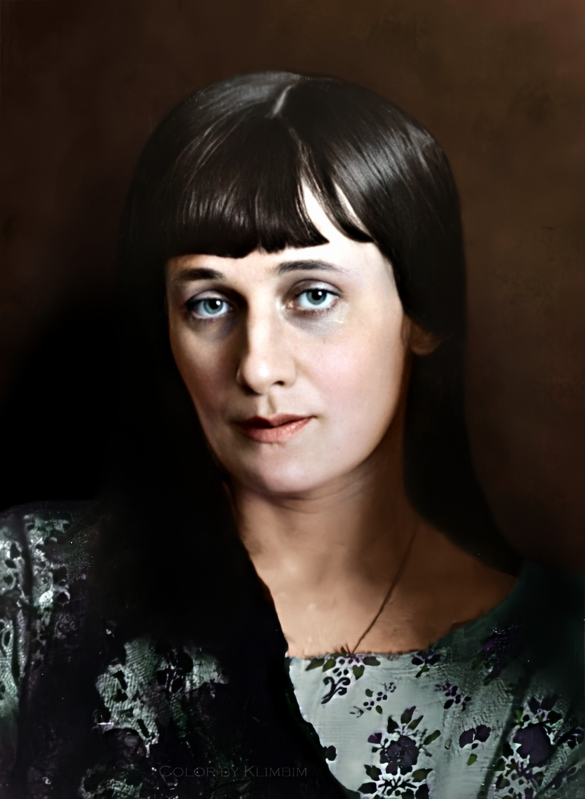

Этот стих про дружбу и я его очень люблю.
Анна Ахматова
***
Туманом легким парк наполнился,
И вспыхнул на воротах газ.
Мне только взгляд один запомнился
Незнающих, спокойных глаз.
Твоя печаль, для всех неявная,
Мне сразу сделалась близка,
И поняла ты, что отравная
И душная во мне тоска.
Я этот день люблю и праздную,
Приду, как только позовешь.
Меня, и грешную и праздную,
Лишь ты одна не упрекнешь.

Главная страница